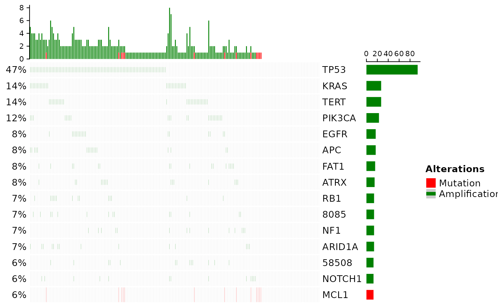
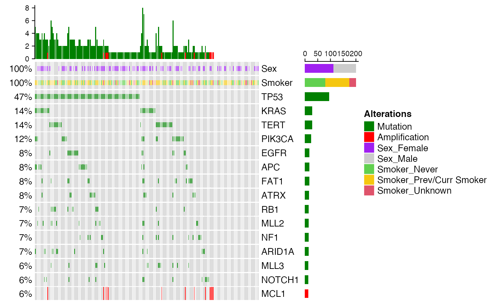

R/plot-oncoprint.R
plot_oncoPrint.Rdplot_oncoPrint Creates the OncoPrint corresponding to the inputted genetic data
plot_oncoPrint(gen.dat, clin.dat = NULL, ordered = NULL)
| gen.dat | A binary matrix or dataframe, with patients as rows and features as columns. Note that the names of the columns must end in ".Del" or ".Amp" to recognize copy number alterations. (see create.bin.matrix for more details on this format). |
|---|---|
| clin.dat | An optional clinical file, including only the features the user wishes to add to the plot. Default is NULL. |
| ordered | An optional vector of length equal to the number of patients under consideration. Indicates the new order (from left to right) to be plotted. |
p : an oncoprint object
library(gnomeR) library(dplyr) library(dtplyr) patients <- as.character(unique(mut$Tumor_Sample_Barcode))[1:200] bin.mut <- binmat(patients = patients,maf = mut, fusion = fusion, cna = cna,mut.type = "SOMATIC", SNP.only = FALSE,include.silent = FALSE, spe.plat = FALSE) gen.dat <- bin.mut[, names(sort(apply(bin.mut,2, sum),decreasing = TRUE))[1:15]] plot_oncoPrint(gen.dat)#>## adding clinical ## clin.patients.dat <- clin.patients[match( abbreviate(rownames(gen.dat),strict = TRUE, minlength = 9), clin.patients$X.Patient.Identifier),] %>% rename(DMPID = X.Patient.Identifier, Smoker = Smoking.History) %>% select(DMPID, Sex,Smoker) %>% filter(!is.na(DMPID)) %>% distinct(DMPID,.keep_all = TRUE) gen.dat <- gen.dat[match(clin.patients.dat$DMPID, abbreviate(rownames(gen.dat),strict = TRUE, minlength = 9)),] clin.patients.dat <- clin.patients.dat %>% tibble::column_to_rownames('DMPID') rownames(gen.dat) <- rownames(clin.patients.dat) plot_oncoPrint(gen.dat = gen.dat, clin.dat = clin.patients.dat)#> #>